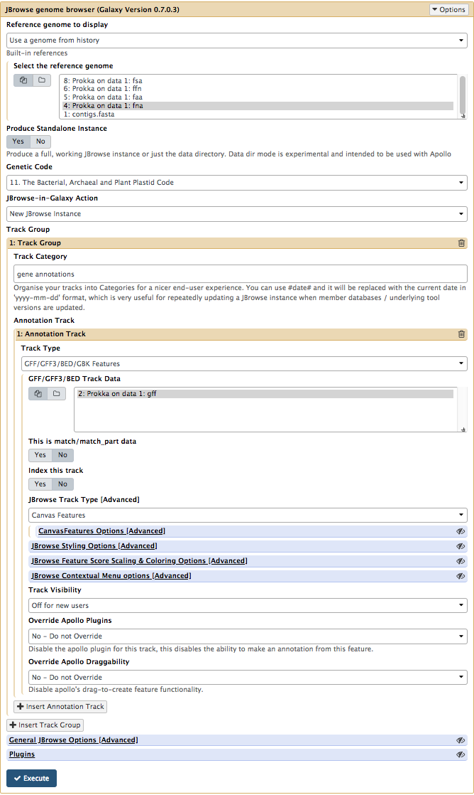
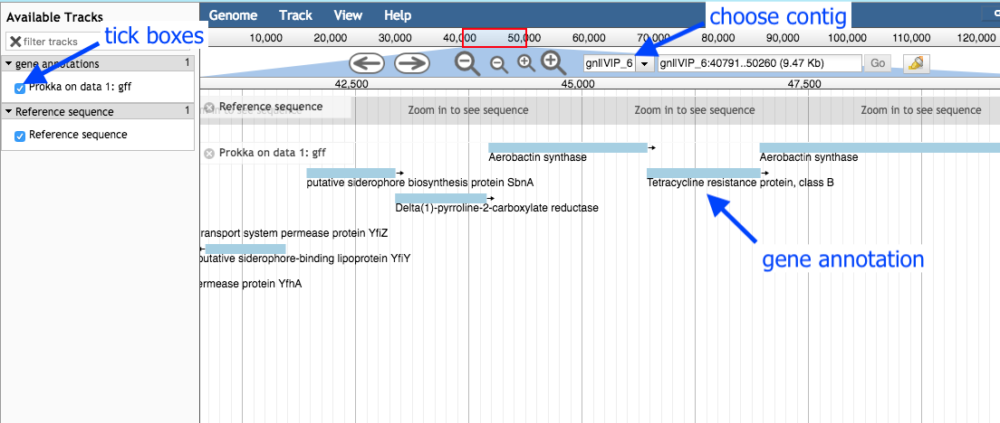

Genome annotation using Prokka
Background
In this section we will use a software tool called Prokka to annotate a draft genome sequence.
- Prokka is a “wrapper”; it collects together several pieces of software (from various authors), and so avoids “re-inventing the wheel”.
- Prokka finds and annotates features (both protein coding regions and RNA genes, i.e. tRNA, rRNA) present on on a sequence.
- Note, Prokka uses a two-step process for the annotation of protein coding regions: first, protein coding regions on the genome are identified using Prodigal; second, the function of the encoded protein is predicted by similarity to proteins in one of many protein or protein domain databases.
- Prokka is a software tool that can be used to annotate bacterial, archaeal and viral genomes quickly, generating standard output files in GenBank, EMBL and gff formats.
- More information about Prokka can be found here.
Input data
- Log in to your Galaxy instance (for example, Galaxy Australia, usegalaxy.org.au).
Prokka requires assembled contigs.
-
If you are continuing on from the previous workshop (Assembly with Spades), this file will be in your current history named something like
SPAdes contigs(fasta) . -
Or, to upload a file of contigs:
Use shared data
If you are using Galaxy Australia, you can import the data from a shared data library.
In the top menu bar, go to
- Click on
Data Libraries . - Click on
Galaxy Australia Training Material: Annotation: Microbial Annotation . - Tick the box next to the file.
- Click the
To History button, select As Datasets. - Name a new history and click
Import . - In the top menu bar, click
Analyze Data . - You should now have one file in your current history.
Or, import from the web
Only follow this step if unable to load the data files from shared data, as described above.
- In a new browser tab, go to this webpage:

- Find the file called
contigs.fasta - Right click on file name: select “copy link address”
- In Galaxy, go to
Get Data and then Upload File - Click
Paste/Fetch data - A box will appear: paste in link address
- Click
Start - Click
Close - The file will now appear in the top of your history panel. When uploaded, the file name will turn green.
Shorten file name
- Click on the pencil icon next to the file name.
- In the centre Galaxy panel, click in the box under
Name - Shorten the file name.
- Then click
Save
Run Prokka
- Go to the Tool panel and search for “prokka” in the search box.
-
Click on
Prokka -
For
Contigs to annotate : yourcontigs.fasta file - All the other settings can be left as they are.
Your tool interface should look like this:

- Click
Execute
How do I choose settings when running a tool?
- In this case, the default settings are appropriate for our data set and analysis.
- Under the tool interface in Galaxy there will usually be a more detailed description of the tool options, and a link to the tool’s documentation.
- It is recommended that you read about the tool parameters in more detail in the documentation, and adjust to your data and analysis accordingly.
Examine the output
Once Prokka has finished, examine each of its output files.
- The
GFF andGBK files contain all of the information about the features annotated (in different formats.) - The
.txt file contains a summary of the number of features annotated. - The
.faa file contains the protein sequences of the genes annotated. - The
.ffn file contains the nucleotide sequences of the genes annotated.
View annotated features in JBrowse
Now that we have annotated the draft genome sequence, we would like to view the sequence in the JBrowse genome viewer.
- Go to the Galaxy tool panel, and use the top search box to search for “JBrowse”.
- Click
JBrowse
Leave most settings as they are, except for:
-
Under
Reference genome to display choose Use a genome from history. -
Under
Select the reference genome chooseProkka on data XX:fna . This .fna sequence is the fasta nucleotide sequence, and will be the reference against which annotations are displayed.
- For
Genetic Code choose 11: The Bacterial, Archaeal and Plant Plastid Code.
-
Click
Insert Track Group -
Under
Track Category type in gene annotations. -
Click
Insert Annotation Track -
For
Track Type choose GFF/GFF3/BED/GBK Features -
For
GFF/GFF3/BED Track Data selectProkka on data XX:gff [Note: not wildtype.gff]
Your tool interface should look like this:

- Click
Execute
JBrowse output
A new file will be created, called
- In place of “XX”, there will be numbers that will refer to the files that Galaxy used in your particular history.
Click on the eye icon next to the file name. The JBrowse window will appear in the centre Galaxy panel.
-
Under
Available Tracks on the left, tick the box forProkka on data XX:gff . -
Select a contig to view, in the drop down box. You can only see one contig displayed at a time. Choose the longest contig.

-
Use the plus and minus buttons to zoom in and out, and the arrows to move left or right (or click and drag within the window to move left or right).
-
Zoom in to see the reference sequence at the top. JBrowse displays the sequence and a 6-frame amino acid translation.
Zoomed in view:

- Right click on a gene/feature annotation (the bars on the annotation track), then select
View Details to see more information.- gene name
- product name
- you can download the FASTA sequence by clicking on the disk icon.
Extension exercise
- Open the JBrowse file that you created to show the gene annotations.
- In the drop-down box, select the longest contig.
- Find an annotation for a “hypothetical protein”.
- Alternatively, in the coordinates box, enter “32,500”.
- Zoom out; see the annotation that spans this location. It is a “hypothetical protein”.
- Click on this annotation. See the nucleotide sequence: select and copy.
- Go to the NCBI page and BLAST this sequence to see what it matches.
- Try the “blastx” option, which will translate your nucleotide sequence into a protein sequence.
- For
Enter Query Sequence , paste your sequence into the box. - For
Genetic Code choose “Bacteria and Archaea”. - For
Database , try the “SwissProt” database. You can also re-try with other options to see how the database affects the results. - All other options can be left as default. Click
BLAST . - What does your sequence match?
- In our example, the top hit is to a carboxylase enzyme.
- In the
Show Conserved Domains window, we can see that this is part of a superfamily of metallo-dependent hydrolases. Click through to find out more about this superfamily. - Genome annotation is constantly refined. We can see here that some manual investigation gave us more information about an annotation. This would need to be experimentally confirmed.
- For a detailed description of the BLAST output, see the top right corner of the page and click “Blast report description”.
See this history in Galaxy
If you want to see this Galaxy history without performing the steps above:
- Log in to Galaxy Australia: https://usegalaxy.org.au/
- Go to
Shared Data - Click
Histories - Click
Completed-annotation-analysis - Click
Import (at the top right corner) - The analysis should now be showing as your current history.
More information
Here are some references covering more information about genome annotation.
Prokaryote genome annotation: Seemann T. Prokka: rapid prokaryotic genome annotation. Bioinformatics. 2014 Jul 15;30(14):2068–9.
Eukaryote genome annotation: Yandell M, Ence D. A beginner’s guide to eukaryotic genome annotation. Nat Rev Genet. 2012 Apr 18;13(5):329–42.
Wheat genome annotation: Clavijo BJ, et al. An improved assembly and annotation of the allohexaploid wheat genome identifies complete families of agronomic genes and provides genomic evidence for chromosomal translocations. Genome Res. 2017 May;27(5):885–96.
Human genome annotation: Harrow J, et al. GENCODE: the reference human genome annotation for The ENCODE Project. Genome Res. 2012 Sep;22(9):1760–74.
Annotation in the clinical setting: Steward CA, Parker APJ, Minassian BA, Sisodiya SM, Frankish A, Harrow J. Genome annotation for clinical genomic diagnostics: strengths and weaknesses. Genome Med. 2017 May 30;9(1):49.
Assessing your annotation: Simão FA, Waterhouse RM, Ioannidis P, Kriventseva EV, Zdobnov EM. BUSCO: assessing genome assembly and annotation completeness with single-copy orthologs. Bioinformatics. 2015 Oct 1;31(19):3210–2.
Comparative genome annotation: König S, Romoth L, Stanke M. Comparative Genome Annotation. Methods Mol Biol. 2018;1704:189–212.
What’s next?
To use the tutorials on this website:
- ← see the list in the left hand panel
- ↖ or, click the menu button (three horizontal bars) in the top left of the page
You can find more tutorials at the Galaxy Training Network: